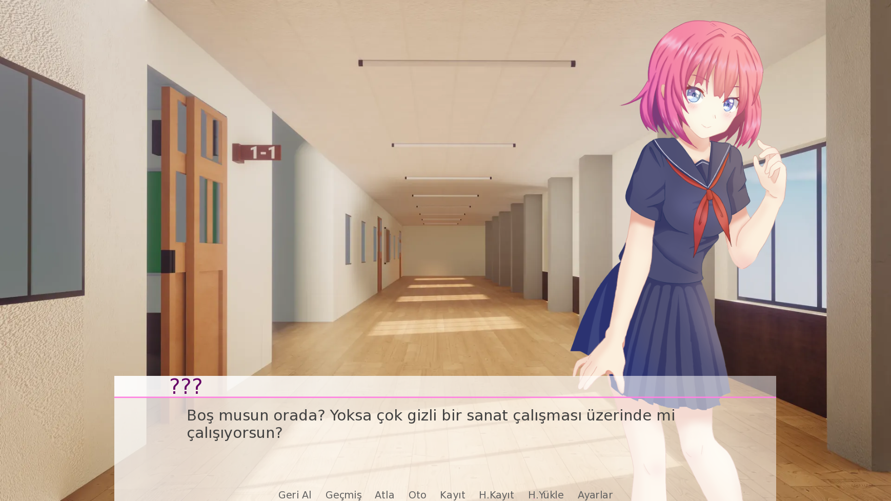
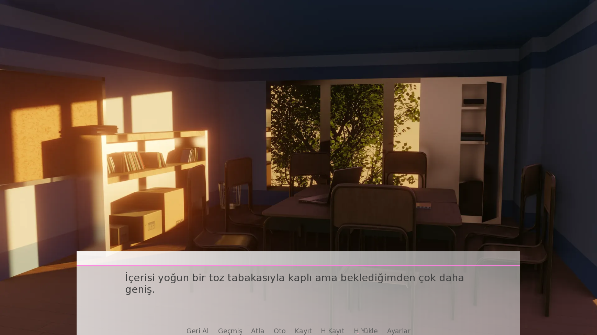
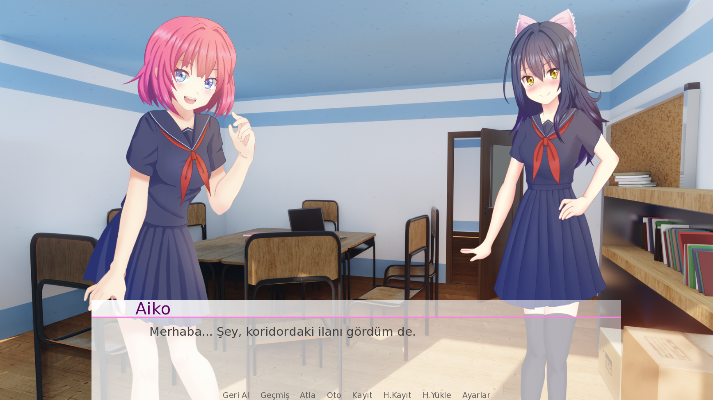
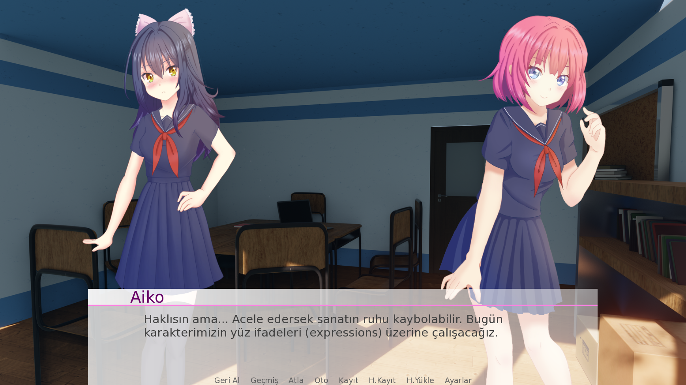

Oyun Hakkında
My School Memories, yeni bir okula adım atan ve yabancı koridorlarda kaybolmuş hisseden ana karakterin, pembe saçlı, enerjik ve kural tanımayan Rin ile tanışmasıyla başlayan sürükleyici bir görsel romandır.
Oyun Hala Yapım Aşamasındadır 2027-28 Döneminde Çıkış Yapacaktır.
Okulun yıllardır depo olarak kullanılan unutulmuş, tozlu bir odasını keşfedip burayı kendi geliştirme stüdyolarına dönüştüren ekip; sonradan aralarına katılan yetenekli sanatçı Aiko ile birlikte kendi kurallarını yazmaya başlar. Kodlar, melodiler, çizimler ve uykusuz maratonlarla dolu bu dünyada, sadece bir oyun değil, gerçek bir dostluk ve yaratıcı bir kaos inşa edeceksiniz.
Geliştirme Günlüğünden Kareler



